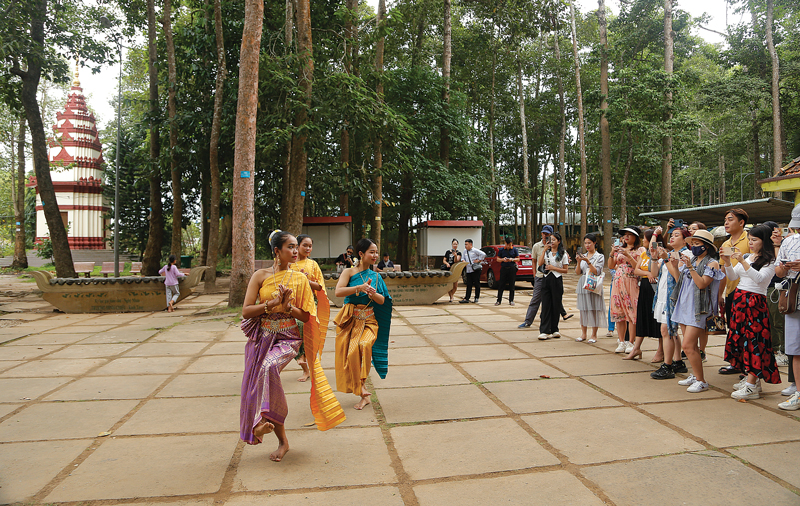
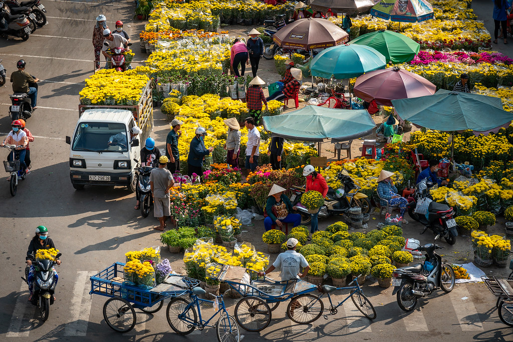
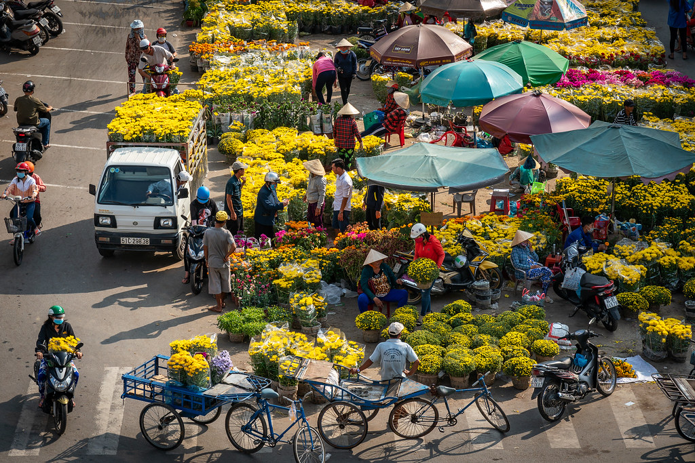

1. Vị trí địa lí:
- Vùng: Đồng bằng Sông Cửu Long.
- Trà Vinh nằm ở hạ lưu sông Tiền, sông Hậu, phía đông giáp biển Đông, phía nam giáp Sóc Trăng.
- Quê tôi thuộc ấp Nhuận Thành, xã Đức Mỹ, huyện Càng Long, tỉnh Trà Vinh(Xưa)
- Nay thuộc ấp Nhuận Thành, xã Nhị Long, Tỉnh Vĩnh Long.

2. Con người và làng quê:
- Con người Trà Vinh là sự kết tinh độc đáo từ quá trình cộng cư, giao thoa văn hóa lâu đời giữa ba dân tộc Kinh, Khmer và Hoa.
- Tính cách hiền lành, thiện lành: Người dân Trà Vinh nổi tiếng với sự chân thành, chất phác và mến khách. Họ sở hữu đức tính nhân ái, nghĩa khí, gắn liền với hình tượng con người dũng mãnh nhưng đầy lòng bao dung trong các câu chuyện dân gian bản địa.
- Gần gũi với thiên nhiên: Một nét tính cách điển hình của người Trà Vinh là "yêu thiên nhiên, hòa đồng cùng thiên nhiên". Điều này minh chứng qua việc thành phố Trà Vinh được mệnh danh là "thành phố xanh" với hàng ngàn cây cổ thụ hàng trăm năm tuổi được người dân gìn giữ qua nhiều thế hệ.
- Cần cù và khéo léo: Sự tinh tế của con người nơi đây thể hiện qua các làng nghề truyền thống và văn hóa ẩm thực phong phú với những món ăn nổi danh như bánh tét Trà Cuôn, bún nước lèo, hay mắm bò hóc. 
Dưới đây là những nét đặc trưng nổi bật về con người nơi đây:
3. Điểm khác biệt của Tết ở đây so với nơi khác:
- Dấu ấn văn hóa Khmer: Tết Nguyên đán thường trùng hoặc gần với thời điểm chuẩn bị cho các lễ hội lớn của người Khmer, không khí Tết tại các chùa Khmer diễn ra linh thiêng, rực rỡ với dàn nhạc ngũ âm, trống Chhay Dăm.
- Điểm đến du lịch tâm linh & cảnh quan: Ao Bà Om (Ao Vuông) là điểm nhấn với cảnh quan thiên nhiên và các lễ hội rộn ràng, đặc biệt là các trò chơi dân gian. Du khách có thể viếng đền thờ Bác Hồ và tham quan các ngôi chùa Khmer kiến trúc độc đáo.
- Văn hóa Cồn (Cù lao): Tết ở các cù lao xanh mướt như Cồn Chim, Cồn Hô mang nét thanh bình, mộc mạc, nơi du khách thưởng thức đặc sản miền Tây, mứt bưởi, chuối khô và trải nghiệm cuộc sống miệt vườn.
- Ẩm thực Tết đặc sắc: Đặc sản Trà Vinh trong dịp Tết bao gồm bún nước lèo, chù ụ rang me, mắm bò hóc, loi choi sả ớt, cháo ám, và bánh canh Bến Có.
- Sự giao thoa văn hóa: Bên cạnh Tết người Kinh, cộng đồng người Hoa tại đây cũng đón Tết rộn ràng, góp phần tạo nên sự phong phú trong nét đặc sắc văn hóa của tỉnh.
Tết Nguyên đán ở Trà Vinh đặc sắc bởi sự hòa quyện văn hóa Kinh - Khmer - Hoa, nổi bật với các lễ hội tại chùa Khmer cổ kính, không khí sôi động tại Ao Bà Om, cùng ẩm thực độc đáo như bánh tét, mắm bò hóc và mứt dừa. Trải nghiệm Tết tại đây bao gồm viếng chùa, tham quan cồn xanh mướt (Cồn Chim, Cồn Hô), và các trò chơi dân gian đặc trưng.
 
